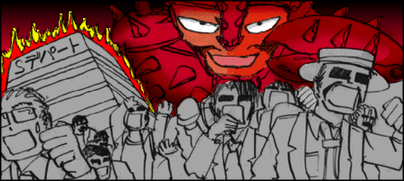
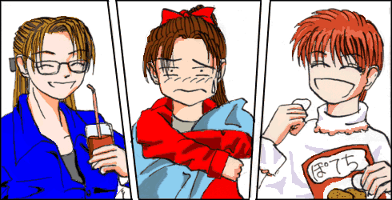
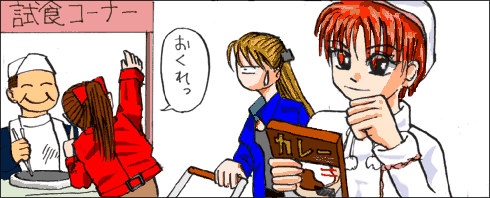
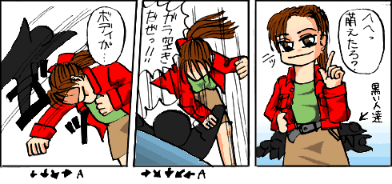

第一話「戦乙女の初陣」
突然それは、Ｋ市のＳデパートの中に現れた。  ここは総理大臣執務室。 河原谷総理は、警察の制服を着た男から報告を受けていた。 椅子に座っているものの、どうも落ち着きがない。 どこか焦っているように思える。 「これをごらんください。」 制服の男は一枚の写真を見せた。 猛火の中のシルエット。一瞬人間のようだが、右手ははさみのような形をしている。 重苦しい表情で総理はその写真を見た。 「これはなんだと思うかね？」 「人型のロボット兵器、人型の生体兵器、改造人間。いろいろ考えられます。これがどのような能力を有しているかは全く分かりません。そんなことよりも重大な問題があります。」 とここで、一旦話を打ち切った。 「この写真は、マスコミにばらまかれているものです。」 「やれやれ」 総理はためいきをついた。 別に連続放火犯というだけならば、特に問題はない。 総理は立ち上がった。 「放火犯は謎の怪人。社会をパニックに陥れるには、十分ですね。ただ相手が人間でないとするならば、普通の人間をさしむけても、意味はないでしょう。」 ふう、と再び総理はため息を吐いた。 「彼女たちの出番、か。」 総理はたちあがり、後ろに振り返った。 「私服警官を各デパート・スーパーに配備し、警戒を強めています。トランス・チームの出動許可を要請します。」 「分かった。」 総理はたばこに火をつけた。 「彼女たちも初陣か。」 総理の顔は重苦しかった。 あるマンションの一室。 ここには三人の少女が住んでいる。 三人とも高校生。わけあって、親元から離れて暮らしている。 「次々に連続出火ねえ。デパートも大変だ。」 リビングルームのソファーにポニーテールの少女が腰掛けている。。デニムのスカートにＧジャン。中はＴシャツ一枚、という服装。活発な少女なのだろう。 「いっちゃん、いっちゃん。そんな格好してたらスカートの中、丸見えだよ」 先ほどの少女よりはやや背が小さい。こちらは、フリルのロングスカートに、フリルのついたブラウスを着ている。髪はショートカット。「かわいい」という形容詞がよく似合う。 「どうせだれもいやしないさ」 こともなげに、先ほどの少女は返答する。 そんなことは、どうでもいい、という態度がよく現れている。 「でも、いさみちゃん。男の子がいればあなたのそんな姿を見て、あ〜んな想像やこ〜んな想像をするのよ？」 先の二人よりもやや長身だろうか？もうひとり少女が腕を組んでそばに立っている。髪はロング、途中で髪留めをして髪をまとめている。タイトの黒いスカートに白いブラウスという服装である。とどめに、眼鏡。その服装か、もう少し年上に見える。 「あなたはそれでも平気なの？」 いさみは、自分の今の姿を見て、健康的な男子高校生が、どういう想像をするか思い浮かべてみた。さまざまな想像が頭をよぎる。 「ぐっ」 ポニーテールの少女は真っ赤になって黙ってしまった。 今日は３人とも平和である。  ピ〜ンポ〜ン。 インターフォンがなった。 「はいはいっと」そのポニーテールの少女、座間いさみは廊下を歩いていき、 ドアを開ける。 「やあ」 ドアの向こうの人影はそう、声を発した。 ドアを開けた瞬間、いさみは露骨に嫌な顔をする。 「だれなの？いっちゃん」 「どなた？」 残りも二人も玄関先まで歩いてきた。それに気がついたいさみは、くるっと振り替えって部屋に入ってしまった。 「あ、いさみちゃん、そんな邪見にしなくても」 彼女たちが見た物体は、髪はぼさぼさ。白衣を着た眼鏡の男。年は２０代後半というところだろうか？白衣の下のＴシャツは「魔法少女ルラールー」がプリントされている。白衣の中が萌えているのが勘弁して欲しい。 「いやあ、亜紀ちゃん、いつもかわいいねえ。」 先ほどのフリルの少女へ向かって言った。 「いやあ、真琴君。いつも美人だねえ。」 ロングヘアの少女へ声をかける。 「うんうん、みんなかわいくて何よりだよ。」 全員の視線は、「早く帰れ！」と言わんばかりだ。誉められるにしても、相手は選びたいものだ。 「まあまあ、そんな熱い視線はやめてくれよ。今日はまじめな話をしに来たんだ。」 傍若無人にその青年はずかずかと入っていった。 先ほどのリビングルーム。いさみもこんどは足を固く閉ざしている。 「で、何の御用ですの？真行寺博士」 真琴がお茶を入れて持ってきた。心なしかお茶をテーブルに置く手が震えているような気がする。どうもこの真行寺という青年は３人にあまり快く思われていないようだ。 「最近、デパートからの出火による火事が続いているのは知っているね。」 ３人はうなずいた。ここのところ、原因不明の火事が続いている。失火か、放火か、議論が分かれているところだ。怪しい人影を見た、という証言もある。 「これを見てくれ。」 ある写真を差し出した後、真行寺はお茶をここでずずず、とすった。 彼が見せたのは、先ほど総理が見た写真。 「これは・・・」 真琴が口を開いた。 「わからん。君たちと同じ生体兵器かも知れんし、人型ロボットかも知れん。放火犯が人間ではない以上、普通の人間では対処できん。そこでだ。」 湯飲みを勢いよくテーブルに置く真行寺。 「出動要請がいつ来るか分からない。いつでも出動できるように、待機しておいてくれ。」 真行寺はこうも付け加えた。 「まあ君たちなら、猛火の中でも死ぬことはないしな、もし火事が起こったら救助活動などもお願いしたいわけだ。」 「了解しました。」 真行寺は立ち上がって敬礼した。 「では、ミッション開始。１４００（いちよんまるまる）」 青年はここで初めてまじめな顔をした。 アイキャッチ（変身前） ＣＭ アイキャッチ（変身後）
「今晩のおかず、まだ買ってなかったのよね。」 
「しっかし、ホントに人多い〜」 亜紀が周囲を見渡す。食料品売り場は、土曜日ということもあってか、ちょっと歩くとすぐぶつかるぐらいに混雑している。また、ここ一体のスーパーが火事で使えなくなっているというのも混雑に拍車がかかっているようだ。 「ヒマ人が世の中には多すぎるんだよ。」 いさみだけがぶつくさ言っている。 「んなこといってると、いっちゃんの大嫌いなピーマン、サラダの中に入れちゃうぞ。」 調理担当の亜紀が横から口を出した。 「でもさあ、なんか平和だよなあ。俺達みたいなのが、本当に必要なのかなあ。」 いさみはふと口に出した。 「どうも、真行寺の趣味につきあわされているような気がするんだよなあ。」 「それは違うわよ。」 真琴は立ち止まり、まじめな顔でいさみの方を向いた。 いさみは何か言おうとしたが、真琴の真剣な表情を見て何も言えず、ただ黙っていた。 「えっと、もう買い忘れはないわね。」 キャスターから、車に荷物を積み込みながら、真琴は買い物リストを確認する。 「では、帰りましょうか。二人とも乗って。」 亜紀が助手席でうれしそうにシートベルトを締め、いさみは後部座席でふんぞり返っている。二人が乗り込んだのを確認して、セルモーターをまわそうとしたその刹那、 ドッカ〜ン。 スーパーの中で爆発が起こった。 「な、なんだ〜？」 地下駐車場の中で、天井から響く爆音に耳をふさぎながら、いさみは声を上げた。 「いさみちゃん、悪いけど、中に入って様子を見てくれる？私たちは一旦、マンションに戻るわ。」 「ちょっと待て、どうして一旦マンションへ帰る？」 「今晩のおかずの保護が重要よ！それにこの車が埋まってしまうわ。」 おいおい。地球平和より、今日の飯か？ 「はいはい、っと」 いさみは、車から飛び降りた。 あちこちで悲鳴が聞こえる。 大きな爆音がして、思わずいさみは、耳を閉じた。 階段を駆け上がる。２階の衣服売り場。 その凄惨な状況に、さすがのいさみも顔が青ざめ、顔を背けた。 「ひっ。」 腕が転がってきた。 子供の腕だ。 いさみは怒りも感じていたが、恐怖も感じていた。ただひたすら怖かった。 我に返ったのは、「それ」を見てからだ。 赤い甲殻。赤いはさみ。そして、黒ずくめのウェットスーツのような服を来た男達。彼らは全員マスクをかぶっている。くろずくめの「スパイダーマン」といった趣である。 「この爆発は貴様のしわざか！」 大きな声でいさみは声を張り上げた。 「ふん、まだここに人間がいたのか。もう全員こうなっていると思ったがな。」 焼けこげた足を、そのカニの怪人は投げた。 いさみは、それを見て呆然となった。 命が命と扱われない状態を見て、怒りとも恐怖とも異なる感情がいさみの体にこみあげてきた。 「貴様は何者だ！」 震えながら、声を張り上げるいさみ。 「かわいい顔をして、口が悪いな。まあその顔に免じて教えてやろう。どうせ貴様は死ぬのだからな。我々はノーマ。この地に混乱をもたらすもの。私はクラブ＝ノーマ。ノーマの幹部。蟹の特殊能力のいくつかをこの体に手に入れたのだ。」 「目的は何だ。」 「いっているだろう。この地に混乱をもたらすのが我が使命。もっとも、お前の死を持って、さらなる混乱を巻き起こしてくれよう。腕をもいでやろうか？それともその体、粉々に吹き飛ばしてくれようか・・・」 クラブ＝ノーマの合図と共に、黒ずくめの集団がいさみに襲い掛かった。 クラブ＝ノーマは、しかし信じられない光景を見た。 少女に襲い掛かった手下の一人はあっさりと蹴りをかわされ、強力なアッパーカットを食らわされ気絶した。別の一人は、うしろから羽交い締めにしようとして、逆に投げられる。目の前のミニスカートの少女は、次々に送り込まれる手下達を苦もなくなぎ倒していく。 その衝撃に、戦闘力を奪われていく、手下達。 
武器一つもたない、ただの人間、しかも小娘が、自分の手下たちをいともたやすくなぎ倒すさまを見て、彼に動揺が見られる。 「別に名乗るようなもんじゃないよ。次はあんたの番だな。いくぜっ。」 いさみは、信じられないスピードで、一気に間合いを詰め、強力な右ストレートを食らわせた。 「いって〜〜〜」 悲鳴と同時に、鈍い音がした。甲殻は思った以上に硬かった。逆にいさみの拳が悲鳴を上げる。 「わはははは。馬鹿め！。この甲殻の硬度はそのようなもので砕けるものではないわ！」 そう言うと、クラブ＝ノーマは左手でいさみの右手の手首を握り締め、左手を頭上高く挙げる。身長差がありすぎるいさみはらくらく釣り下げられてしまった。 「さあ、どう料理してやろうかな。くっくっくっ」 クラブ＝ノーマは一人笑い声を上げた。 バシバシバシバシ！ クラブ＝ノーマの周辺が爆音が鳴った。 いきなり攻撃を受けたショックで、左手の力を緩める。自由になったいさみは、地面に転がり落ちた。 「なんだ？」 まるで高出力のレーザー砲による攻撃を受けたようだ。 正面を見ると見ると、白い甲冑を纏った少女と、青い甲冑を纏った少女が立っていた。 「いっちゃん、助っ人に来たよ。そおれ！」 白い甲冑の周りに青白い光球がいくつか生まれ、光球は、クラブ＝ノーマの元に一直線に襲い掛かる。 「ぐわっ」 うめき声をあげる、クラブ＝ノーマ。 「おいおい、亜紀、俺だっているんだぞ。」 あきれた声を出すいさみ。 「き、貴様らは何者だ！」 いさみは、ゆらゆらと立ち上がった。 「おまえらみたいな奴を退治するために生まれた、人であって人でないもの。それが俺達だ。」 いさみは右手を頭上に掲げ、叫んだ。 「生成！バイオアーマー！」 一瞬、彼女のからだが光ったように見えた。 彼女の周囲に発生する、奇妙な細胞。 無限に増殖し、彼女の体を埋め尽くした。 そして、だんだんと形を作って行く。 無秩序な増殖はやがて秩序を持ち、収束のときを迎え、それは彼女の体を纏う赤い甲冑となった。 いさみは、亜紀と真琴の側に並んだ。 「生命戦隊トランスギャルズ！ここに参上！」 三人が一斉に叫んだ。 「トランスギャルズだと。小娘ごときに何が出来る。くらえ！我が分身を」 クラブ＝ノーマが小さな蟹を投げた。大爆発する蟹。 衣服は燃え広がり、天井は崩れ落ちようとしていた。 「きゃあっ」「くうっ」「うわあ」 悲鳴を上げるいさみ、真琴、亜紀の三人。 戦闘に耐え切れず、とうとうビルが崩壊した。 クラブ＝ノーマは先に瓦礫の中から這い出した。 「ふははは、ビルに埋もれて死ぬがいい！。この程度の衝撃、我が甲殻を持ってすれば、耐えられないものではないわ。」 クラブ＝ノーマはひとり瓦礫の上で大笑いしていた。 「ふふふ、見たか。俺のその分身は、空気中の元素から、爆薬を作ることが出来るのだ。いくらやつらとてＴＮＴ火薬の直撃を受けて無事ではいられまい。」 「それがそうでもなかったりするのよね。」 クラブ＝ノーマの喉元に、真琴の右手に握られている光る剣が伸びている。 「何！」 「自分だけが強いと思わないことだな。あの程度の衝撃なら、俺達ならへでもないぞ。」 体にまとわりつく瓦礫を払いながら、平然と言い放つ、いさみ。 「ば、ばかな。あれだけの攻撃を受けて、どうして貴様らは無傷なのだ！」 クラブ＝ノーマは混乱していた。 「さあ、今度はこっちの番よ。一気に片をつけるわよ。」 真琴は何かを決意した。 「亜紀！」 真琴が亜紀に合図した。 「いっけえ〜〜〜」 亜紀の周囲に発生する、先ほどよりはひときわ大きい光る光球。それは、ふたたびクラブ＝ノーマの甲殻を正確に命中した。 「ぐわあ」 悲鳴を上げるクラブ＝ノーマ 「ふん」 真琴が持つ光り輝く剣。それが、クラブ＝ノーマの甲殻に衝撃を与える。 「くうっ」 クラブ＝ノーマの甲殻にひびが入った。 「いさみ、あなたで決めてよ！」 真琴はいさみに向かって叫んだ。 「まかせとけ！くらえっ！」 いさみの甲冑の右手部分が光り輝く。 今度は、クラブ＝ノーマの甲殻に遮られることなく、いさみの右腕はクラブ＝ノーマの甲殻を貫通した。 いさみに振りかかるクラブ＝ノーマの体液。その色は赤かった。 「ま、まさか、おまえらのような存在がいるとは。」 腕を組む真琴がクラブ＝ノーマに向かって言った。 「自分だけが力を持っていると思わないことね。」 「覚えておいてやるよ。トランス・ギャルズ。おまえ達は、強かった。」 そう言って、クラブ＝ノーマは息絶えた。 いずこかにある司令室。 この戦いをモニターしていたもの達がいた。 「やつらは一体何者だ！あのような存在がいては、我々の計画の邪魔になる！」 「では、いかがなさいますか？」 「奴等の抹殺が先だ！トランス・ギャルズをおびき出せ、そして叩き潰せ！」 「わかりました。やや計画が遅れますが、しかたありますまい。」 そして、再びいさみたちのマンションの中。 「殺してしまったんだよな」 いさみは、自分の部屋で今日の戦いを振り返っていた。 甲殻を貫いた後の生暖かい感触。 自分に飛び掛かった体液。 そして、自分の腕が貫通したときに聞いたクラブ＝ノーマのうめき声。 「仕方がなかったのよ」 真琴の声が聞こえた。 「勝手に人の部屋に入ってくるな。」 「落ち込んでいる妹の面倒をみちゃいけないわけ？いさみちゃん。」 妙なことを真琴は言った。 「妹？」 いさみは真琴に聞き返した。 「呪われた体。望まない境遇。私たちは同じ物を共有している、姉妹みたいなものよ。あなたの気持ちは痛いほどよく分かる。人を傷付けると同じだけ自分も痛み、傷つく。特にあなたは、ね。」 真琴は話しながらだんだん、視線を落としていく。 「でもね。私たちは、きっと人類にとって必要なの。唯一残された希望の砦———」 「そうだといいんだけどね。」 いさみの目はどこか別のところを向いていた。 ピンポーン。 再びインターフォンがなった。 「あ、亜紀ちゃん。真琴ちゃんといさみちゃんは？あ、いる？じゃ上がらせてもらうよ」 真行寺の声がした。再び何の用だろうか？ 「この前、いさみちゃんが倒した例のカニ怪人だけどね」 ここでいさみは真行寺の言葉を遮った。 「クラブ＝ノーマ。命を張ったんだ。名前ぐらい呼んでやれ。」 「で、そのなんとかノーマとかいうカニ怪人なのだけれどもね」 真行寺は意に介せずそのまま話し続ける。いさみは、表情に不満を表していたが、もうそれ以上何も言わなかった。 「どうも地球外の生命体のようだ。遺伝子パターンが、既存のどのＤＮＡとも一致しなかったんだ。」 「じゃあ何か、奴等は地球の外から地球を侵略しにでも来たというのか？」 いさみは真行寺につっかかった。 「そんなことまでは知らんよ。ただ、そういう結果が出た、ということだけを知らせに来ただけだ。」 真行寺はこともなげに言った。 突如現れたカニの怪人クラブ＝ノーマ。彼は一体何者だったのか？そして、彼らの目的は一体何か？謎は残ったままであるが、トランス・ギャルズの戦いは始まったようだ。彼女たちの行く手に迫るものは、一体何なのだろうか？ 次回予告 私亜紀、トランス・ギャルズの遠距離攻撃担当なんだ。今度ははあたしたちが、どうして生まれたのかを教えてあげるね。 真行寺：君達は今日から人であって人でないんだ。 え〜そんなこといきなり言われても〜。亜紀困っちゃう〜。 真琴 ：まあ、あるがままを受け入れるしかないわね。 亜紀 ：わ〜い、ホントに女の子になったんだ。 いさみ：あ、俺のからだが女になっている。 次回、「運命のいたずら」 見逃したら、亜紀泣いちゃうよ！ |